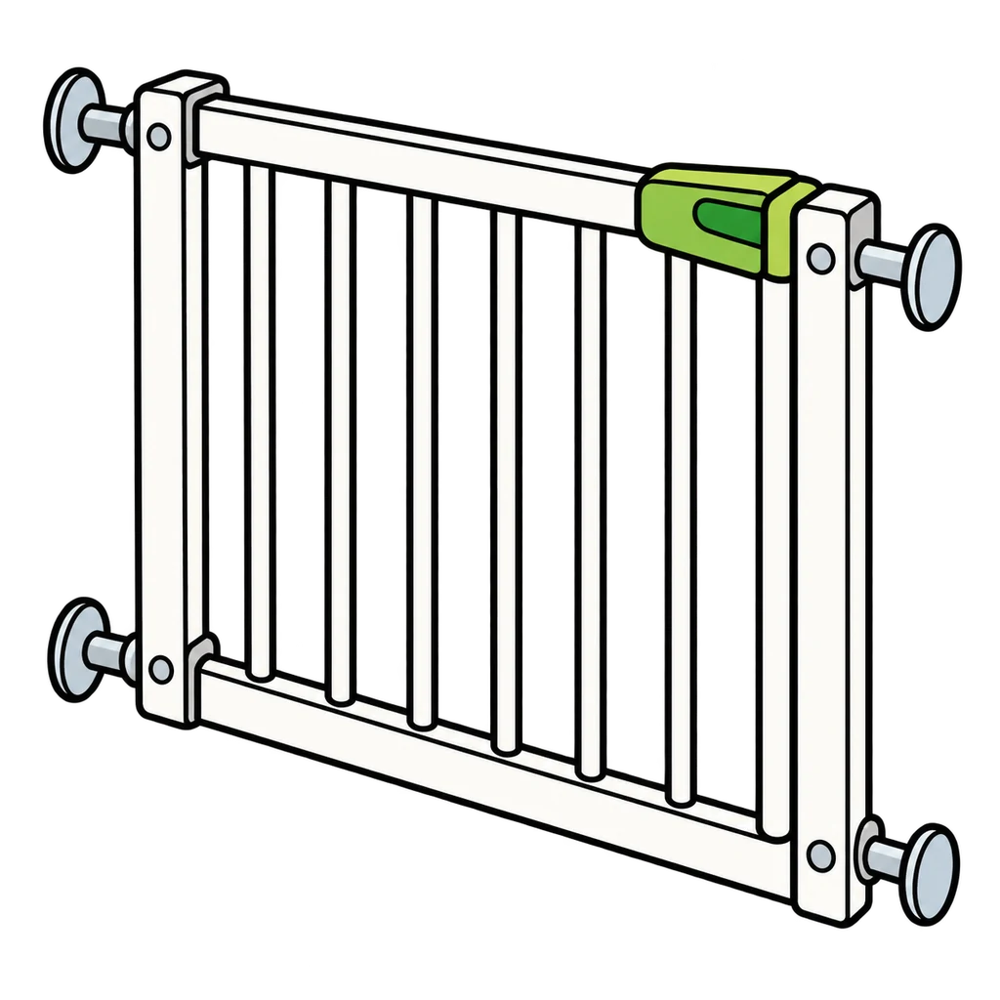
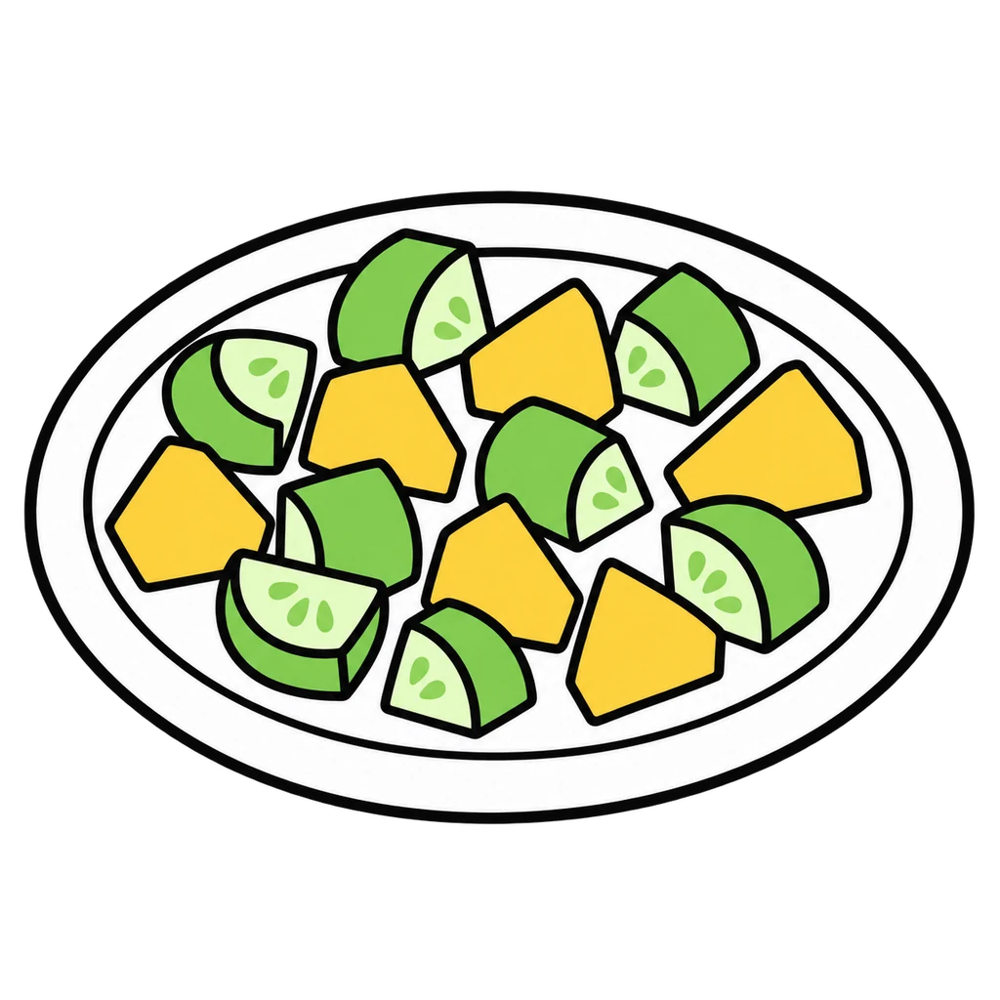
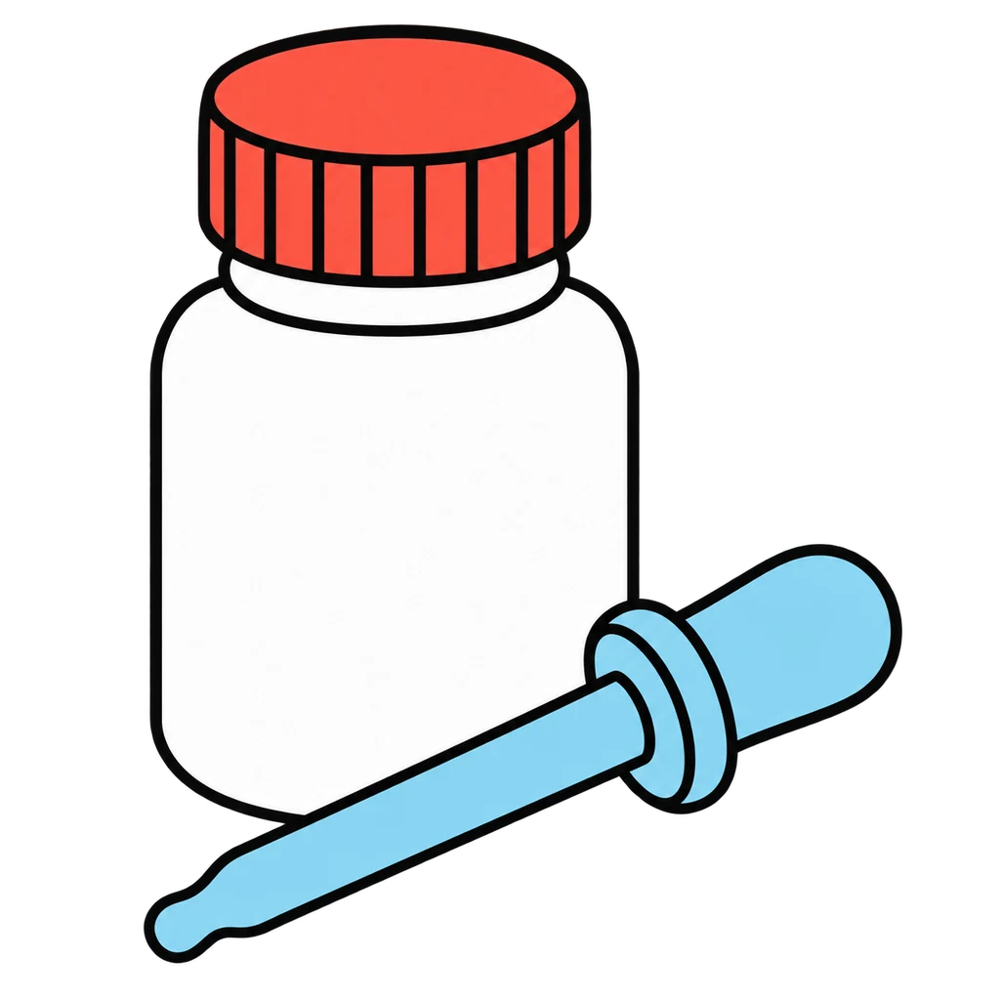
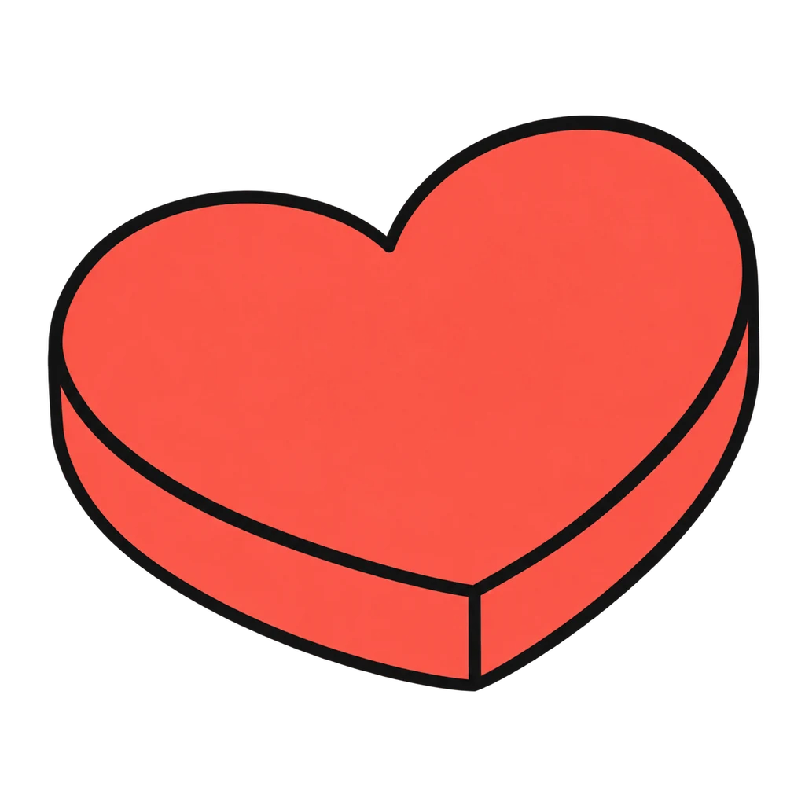
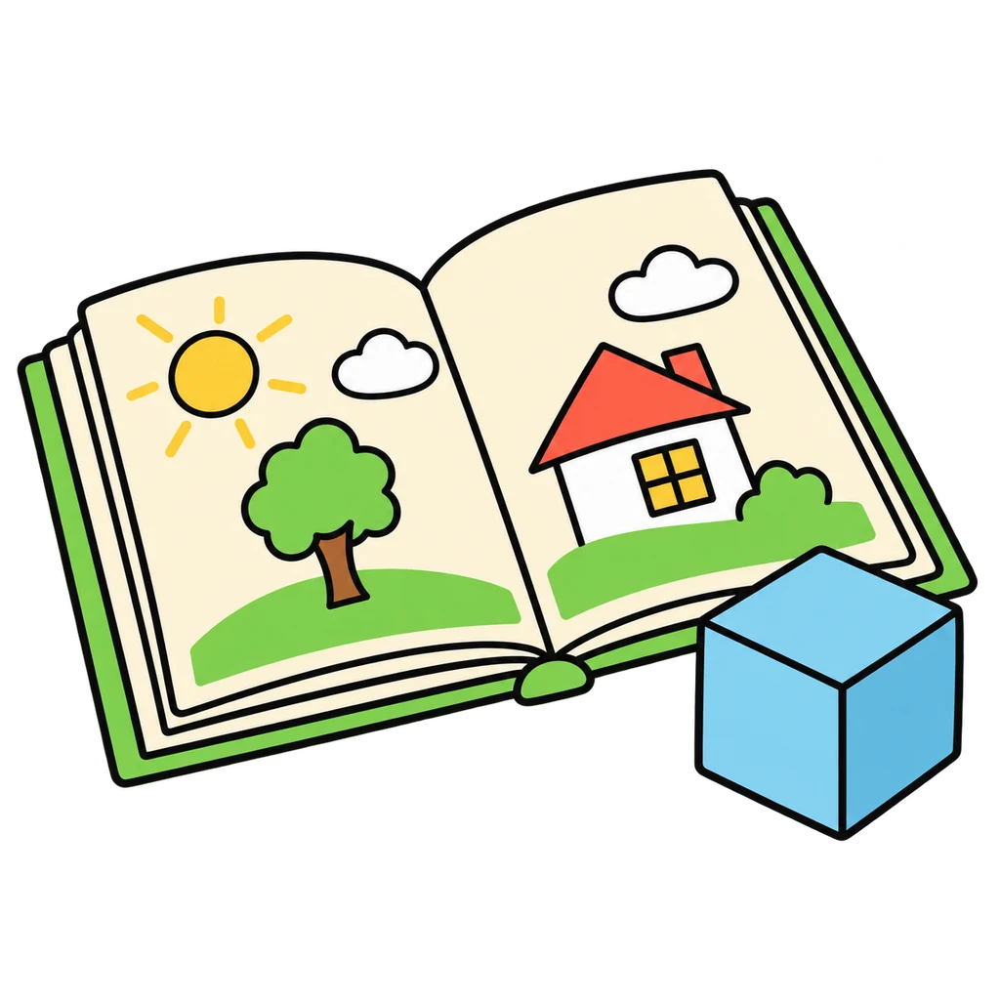
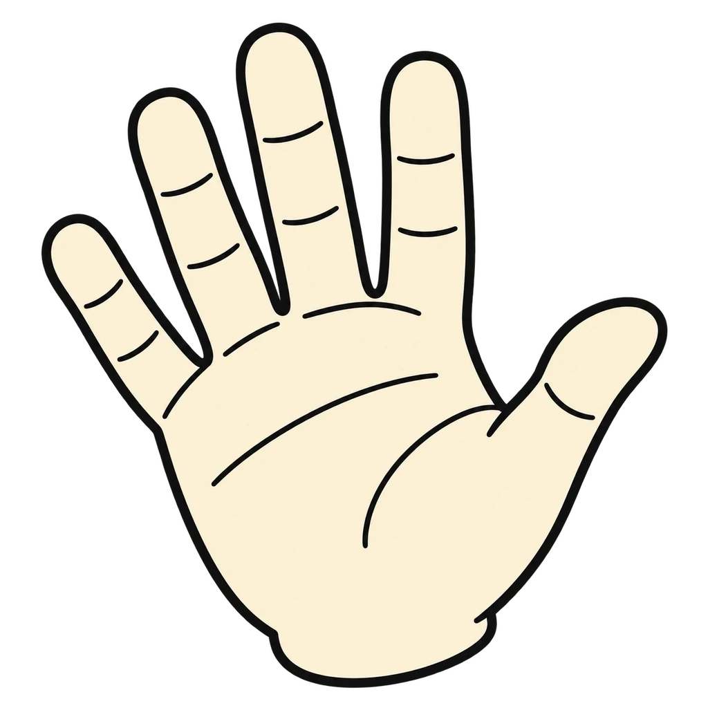
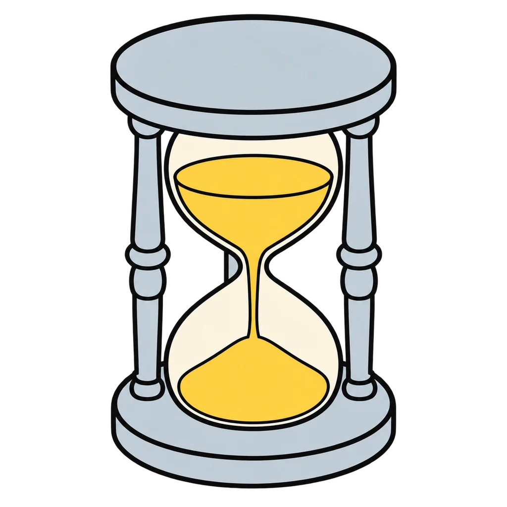
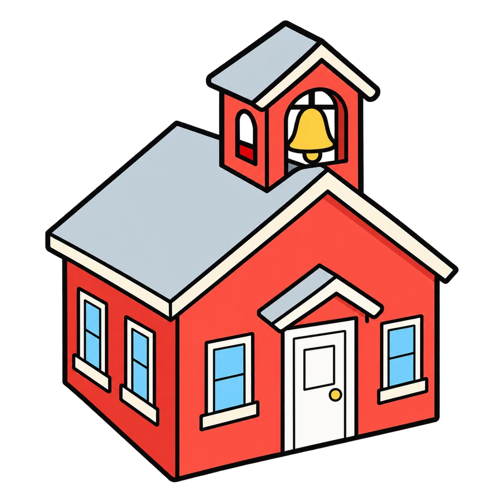
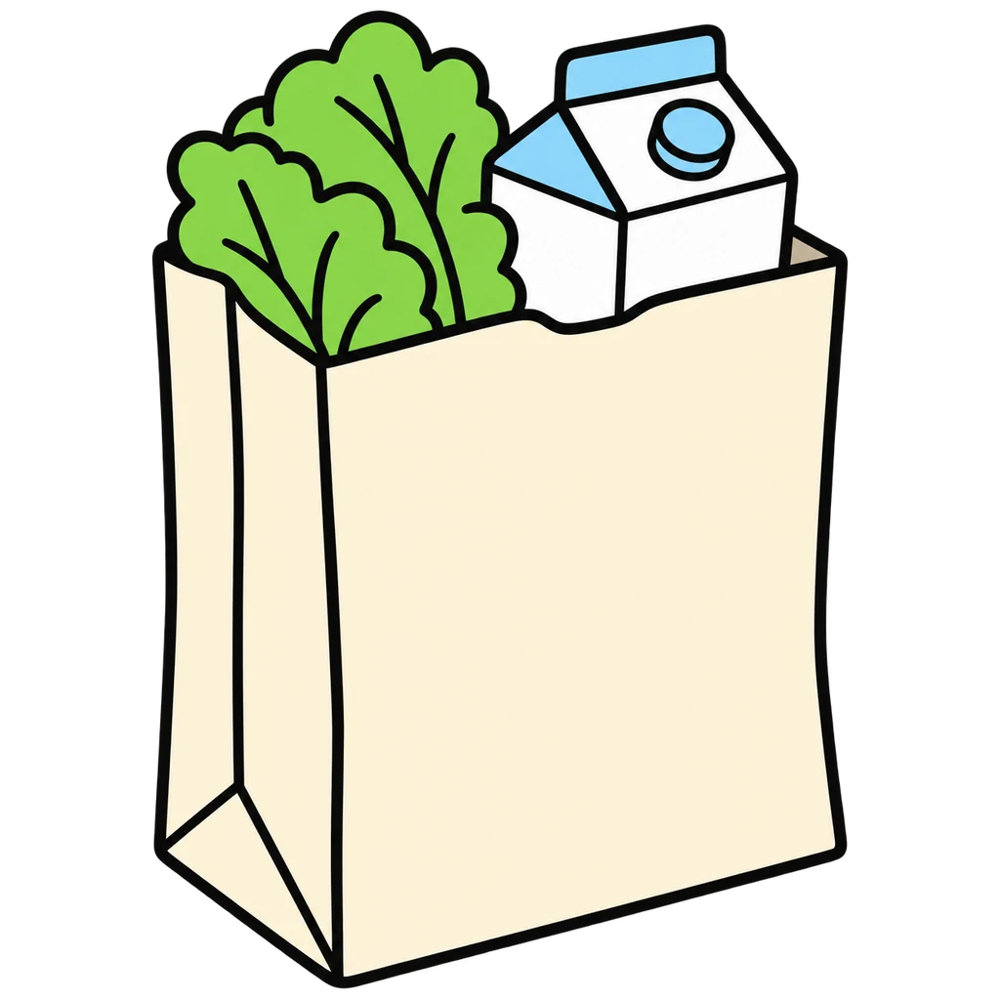

Reviews Lesson 3.16. Eight Jobs reviews Lesson 3.16: the eight jobs of a caregiver, which five a babysitter does, the community supports, and readiness at a general level. Use it before Lesson 3.17 (the lesson opens with the eight jobs on the board if the exit cards need it) or as review for Unit 3 Test items 17 and 18. The readiness lines are the handout's own general lines and the feedback repeats that this is not about whether or when anyone should have a child. Teaching is keyed "sometimes" for a babysitter and is not asked as a yes or no.

Eight Jobs
A toddler example appears. Tap the caregiver job it shows from eight. Then a job name appears, and you tap yes or no: does a babysitter do this? Then match each community support to what it does.
How to play
- Parenting is unpaid work, and it is the biggest job most adults ever do.









Done
The ones to study:
Worth knowing by heart:
- The eight jobs of a caregiver with a toddler example each (Handout 03.16 Part 1)
- Which jobs a babysitter does: safety, food, love, limits, time; not money or health decisions
- The community supports and what each does; 211 is one phone number for finding any local help (Part 4)
- Readiness at a general level: age, money, support, patience (Part 3)